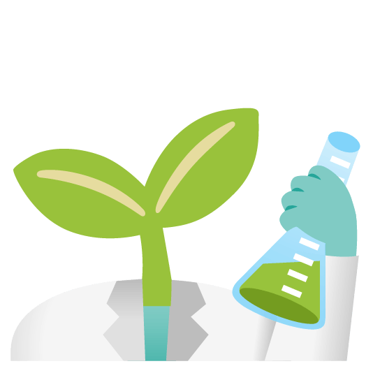

Upload crop photos to detect diseases and check soil fertility instantly.
Check Crop HealthUpload a photo of your crop to instantly identify diseases and get treatment advice.
Enter your soil details to know the NPK levels and find the best crop for your land.
Get real-time weather updates and expert advice for better farming yields.
Chat directly with our intelligent virtual assistant to get instant answers to all your farming queries anytime.